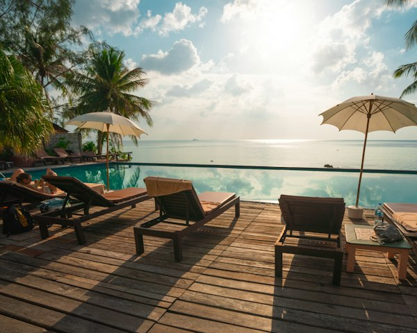
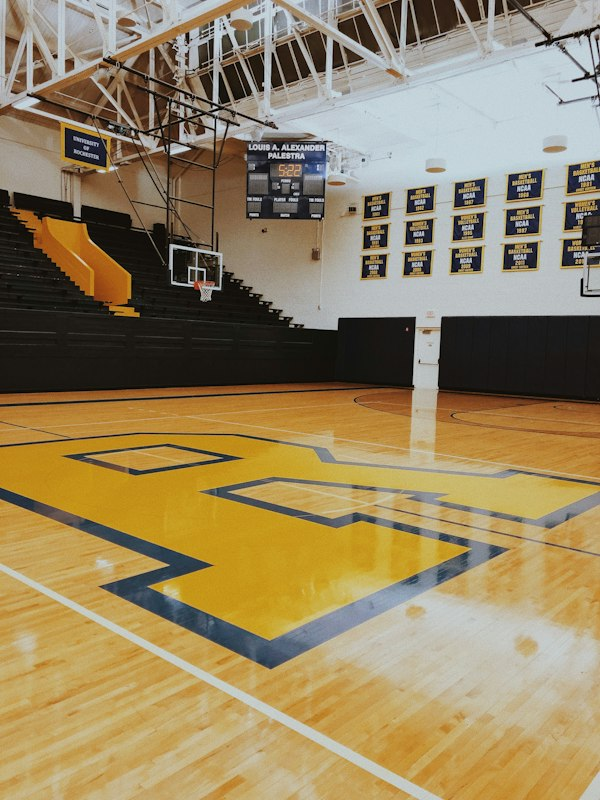

Mengenal SMA Nusantara Unggul
Membangun generasi berprestasi, berkarakter, dan siap menghadapi masa depan melalui pendidikan berkualitas yang seimbang dan inklusif.

Gedung & Lingkungan Sekolah SMA Nusantara Unggul

Pembelajaran yang aktif, nyaman, dan berorientasi pada pengembangan kreativitas siswa.
Pendidikan Berkualitas untuk Masa Depan Berkarakter
SMA Nusantara Unggul didirikan dengan komitmen memberikan kontribusi nyata bagi dunia pendidikan Indonesia. Sekolah ini mengedepankan pendekatan pembelajaran yang menyeluruh, memadukan keunggulan akademik, pembentukan kepribadian yang beretika, serta keterampilan praktis yang dibutuhkan di era digital.
Melalui implementasi Kurikulum Merdeka, siswa didorong untuk menjadi pembelajar mandiri, kritis, dan berdaya cipta. Kami meyakini bahwa setiap siswa memiliki potensi unik yang dapat berkembang secara optimal dalam lingkungan sekolah yang mendukung dan kondusif.
Visi & Misi SMA Nusantara Unggul
Arah dan tujuan yang menjadi pedoman dalam penyelenggaraan pendidikan sehari-hari.
"Menjadi institusi pendidikan menengah unggulan yang menghasilkan lulusan beriman, berakhlak mulia, cerdas secara akademik, berwawasan global, dan adaptif terhadap kemajuan zaman."
Visi ini menjadi kompas bagi seluruh tenaga pendidik dan tenaga kependidikan dalam mengarahkan setiap aktivitas pembelajaran di SMA Nusantara Unggul.
Penguatan Karakter & Nilai Moral
Menyelenggarakan pembiasaan etika, nilai-nilai spiritual, dan kedisiplinan yang terintegrasi dalam keseharian siswa.
Pembelajaran Akademik Berkualitas
Mengembangkan metode pengajaran interaktif dan kontekstual berbasis sains, teknologi, dan penalaran kritis.
Eksplorasi Minat & Potensi Diri
Menyediakan wadah pembinaan bakat seni, olahraga, kepemimpinan, dan keorganisasian melalui kegiatan ekstrakurikuler.
Kesiapan Jenjang Pendidikan Tinggi
Mempersiapkan siswa secara matang untuk menembus seleksi perguruan tinggi negeri maupun swasta impian.
Prinsip Pembelajaran Kami
Empat pilar nilai yang dipegang teguh oleh seluruh sivitas akademika.
Prestasi Akademik
Fokus pada pemahaman konsep yang mendalam, penalaran logika, serta budaya membaca dan riset literatur ilmiah.
Pengembangan Karakter
Menanamkan kejujuran, rasa hormat terhadap sesama, tanggung jawab sosial, dan kepedulian terhadap lingkungan hidup.
Literasi Digital
Pemanfaatan teknologi secara bijak, etis, dan produktif untuk menunjang efisiensi belajar dan riset modern.
Kreativitas & Kolaborasi
Mengasah kemampuan bekerja dalam tim, toleransi terhadap perbedaan pandangan, serta keberanian melahirkan karya baru.
Sarana & Ruang Pembelajaran
Dokumentasi fasilitas sekolah yang bersih, terawat, dan siap mendukung kegiatan siswa.
Laboratorium Komputer
Perangkat komputer modern dan teknologi digital untuk pembelajaran informatika.

Praktikum Laboratorium
Eksplorasi eksperimen sains Fisika, Kimia, dan Biologi dengan standar keselamatan yang baik.
Perpustakaan & Riset
Suasana baca yang tenang dan nyaman didukung koleksi referensi cetak dan digital.

Gedung Olahraga & Seni
Sarana aktivitas kebugaran, pertandingan olahraga, serta ruang unjuk ekspresi siswa.